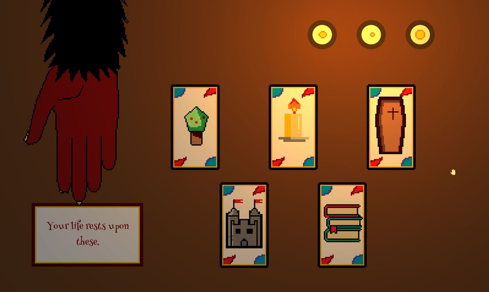

Final University Project
Solo Project
An ambitious 2D Boss Rush featuring over 20 bosses based on the letters of the alphabet, all with very distinct behaviors and movement patterns.
The game also employs a complex movement system, which was designed to give the player as much freedom within their movement, allowing for a wide variety of ways to tackle the game's bosses.
It was designed to cater to players who enjoy a high level of challenge, with the challenge all still being completely fair and learnable, and even includes a bonus "Impossible Mode".
The process of designing the movement to be freeing yet balanced, while making bosses that were varied, escalated in difficulty, all while being completely fair and consistent was a herculean endeavour.
It remains the game I've put the most work into and the one I'm most proud of.
RPG Project
Collaborative Project
Made in One Week
An approximately 30 minute long 1-BIT turn based RPG game created within a single week. I was responsible for creating the entire RPG system, which was based off of Rock Paper Scissor, writing all of the dialogue, mapping out every single NPC location, item location, and the layout of every screen, and balancing the entire game.
All of that on top of coding the entire combat system, adjusting the atmosphere, doing some artwork and incorporating all of the audio. This project proved to be a significant test of my ability in forward thinking, and the ability to quickly and efficiently envision and layout a fun and interesting gaming experience.
This was designed to be a relatively simple game in terms of difficulty, as the main draw was the atmosphere and the novelty of a Rock Paper Scissor centric RPG.
Collaborative Project
First 3D Project
My first substantial 3D game, made in collaboration with 2 other people. It was a first person platformer with the unique mechanic of stopping gravity.
It consists of 7 levels all of which have a time limit of 20 seconds, and steadily introduces new mechanics as the game progresses.
Collaborative Project
Sales Pitch Project
The prompt that we were given was to make a game with the same base mechanics as an app store game named "Pack Master", but with our own unique spin.
The brunt of the task was less to do with developing the game, and more so designing a blueprint and delivering a sales pitch with a target audience in mind.
We made our take on this prompt a kid friendly game. Linked above is the video I scripted, voiced, and edited, pitching the game.
Collaborative Project
Game Made In 3 Hours
A charming endless runner made in 3 hours. Due to the massive restriction, this was a very effective excercise in restraint.
We aimed for a very mechanically simple yet fun gameplay loop, and made all the focus on the presentation which proved to be the correct decision as we won first place in this game jam.
Collaborative Project
Game Made In 3 Hours

Eternal Game Night is an atmospheric puzzle game where the player engages in a simple card game with the devil.
Also made in 3 hours, we went for a completely different approach for this game. Our first 3 hour game was physical, while we made this one a mentally oriented cryptic puzzle game.
Collaborative Project
Game Made in 3 Days
Rockbottom Hero is a comedic auto-runner made with a grid-based system.
This remains the most stressful game I've ever had to make, as it was simply too ambitious for the meager 3 day time limit.
Despite that, we were still able to construct the vision we initially had in mind, but in exchange made some sacrifices.
Due to the time limit, we had to change the game from being challenging, to being a simple game and instead focusing on the comedic nature of it.
This restriction allowed us to rethink our base vision and make something more enjoyable.
Collaborative Project
Team Consisting of 4 Other People
An atmospheric 3 level 2D platformer game made by 5 people. This was a 2nd year university assignment and definitely the weakest work in this portfolio, but important to note nonetheless. To this day the largest group I have ever been a part of. It was a very crucial learning experience, as we had to create a game with a singular cohesive vision between 5 people who did not know each other very well.
All of this while being unable to meet in person due to the pandemic, and unable to call because of timezone differences. This meant that this collaborative project had to be done entirely through messaging.
It was an invaluable experience, as I was the group leader, and this project taught me how to cordially take different people's differing visions and organize and combine them in a cohesive manner.